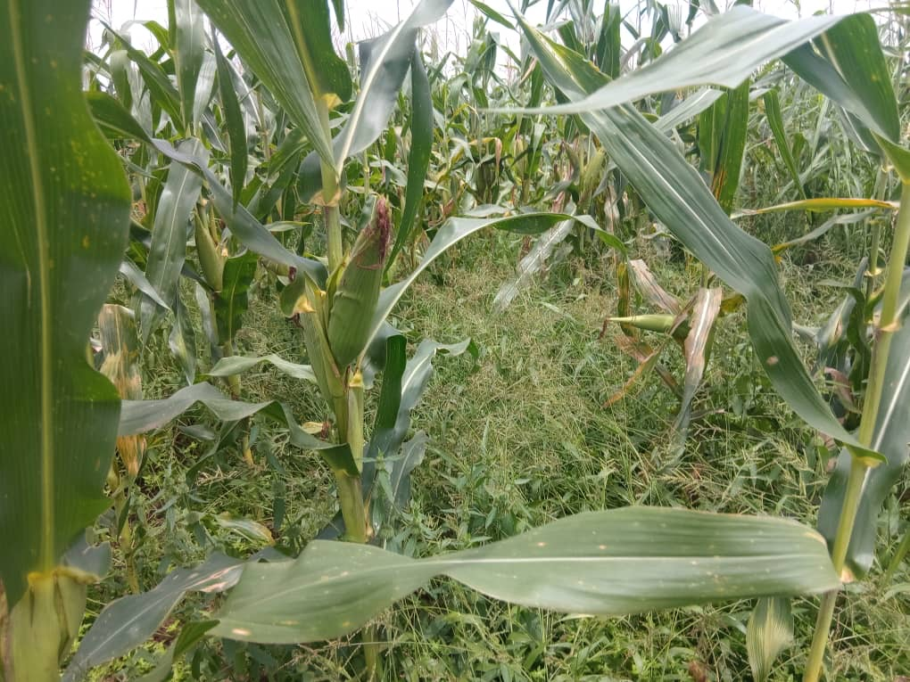
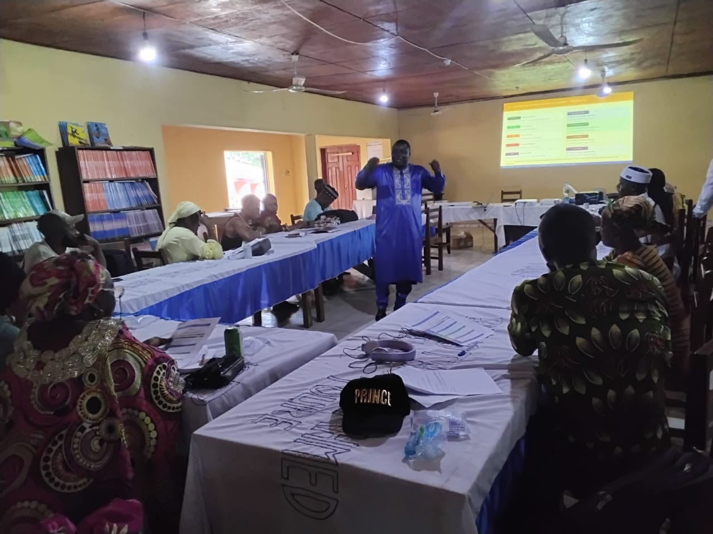
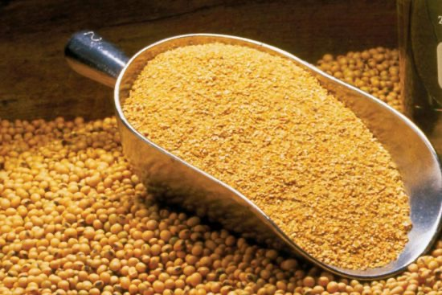

La production du maïs constitue le cœur de métier de la fédération. Nous accompagnons les producteurs dans l’adoption de bonnes pratiques culturales pour améliorer durablement les rendements.
La mécanisation agricole et la formation continue des producteurs sont au centre de notre stratégie de modernisation.


La transformation locale et le stockage permettent de réduire les pertes post-récolte et de créer de la valeur ajoutée pour les producteurs.
Découvrez comment nos actions se déploient sur le terrain dans les 5 préfectures de la Haute Guinée.
Nos réalisations